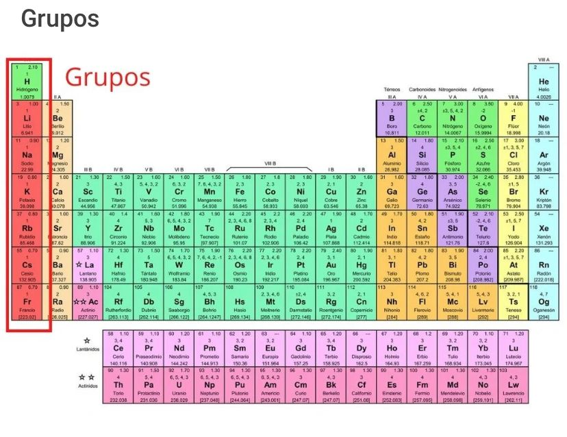

TABLA PERIODICA
¿Que es la tabla peridica?
La tabla periódica, o tabla periódica de los elementos, es un registro organizado de los elementos químicos según su número atómico, propiedades y características.
Está compuesta por 118 elementos confirmados por la Unión Internacional de Química Pura y Aplicada (IUPAC, por sus siglas en inglés), de los cuales
94 son elementos que existen en la naturaleza, y
24 elementos son sintéticos, es decir, han sido creados de manera artificial.
Su desarrollo está estrechamente vinculado con el descubrimiento de nuevos elementos y el estudio de sus propiedades comunes. Aspectos como la noción de masa atómica y las relaciones entre la masa atómica y las propiedades periódicas de los elementos han resultado fundamentales para configurar la tabla periódica moderna.
La tabla periódica funciona como una herramienta fundamental para el estudio de la química, pues permite identificar de manera coherente y fácil las diferencias y similitudes entre los elementos químicos.
Su creación le es atribuida al científico ruso Dimitri Mendeléyev en 1869. A partir de entonces, la tabla periódica ha sido mejorada y actualizada por otros científicos a medida que se descubren y estudian nuevos elementos.
Tabla periódica de los elementos
¿Cómo está organizada la tabla periódica?
La tabla periódica presenta todos los elementos conocidos hasta el momento, los cuales están organizados y ubicados según sus características y relación entre los mismos en grupo, períodos, bloques y metales, metaloides y no metales.
Grupos

La tabla periódica está compuesta por 18 grupos de elementos organizados en columnas verticales, numerados del 1 al 18 de izquierda a derecha, comenzando por los metales alcalinos y terminando con los gases nobles.
Los elementos que pertenecen a una misma columna tienen características químicas similares, a partir de cómo se estructuran los electrones en la última capa del átomo.
Por ejemplo, en la primera columna se ubican los elementos que tienen un electrón en la última capa del átomo. En este caso, el potasio tiene cuatro capas y en la última tiene un electrón.
Los elementos químicos se organizan en grupos de la siguiente manera:
Grupo 1 (I A): metales alcalinos.
Grupo 2 (II A): metales alcalinotérreos.
Grupo 3 (III B): familia del escandio.
Grupo 4 (IV B): familia del titanio.
Grupo 5 (V B): familia del vanadio.
Grupo 6 (VI B): familia del cromo.
Grupo 7 (VII B): familia del manganeso.
Grupo 8 (VIII B): familia del hierro.
Grupo 9 (VIII B): familia del cobalto.
Grupo 10 (VIII B): familia del níquel.
Grupo 11 (I B): familia del cobre.
Grupo 12 (II B): familia del zinc.
Grupo 13 (III A): térreos.
Grupo 14 (IV A): carbonoideos.
Grupo 15 (V A): nitrogenoideos.
Grupo 16 (VI A): calcógenos o anfígenos.
Grupo 17 (VII A): halógenos.
Grupo 18 (VIII A): gases nobles.
Períodos
Los períodos son las siete filas horizontales que tiene la tabla periódica. En estas filas se agrupan los elementos que tienen el número de capas de electrones que coincide con el número del período.
Por ejemplo, en la primera fila el hidrógeno y el helio tienen una capa de electrones. En el período dos hay ocho elementos que tienen dos capas de electrones. En la tercera fila los elementos tienen tres capas de electrones, y así sucesivamente.
En el periodo seis se encuentran los elementos que tienen seis capas de electrones, al igual que la fila inferior de los lantánidos. En el período siete se encuentran los elementos que tienen siete capas de electrones, al igual que la última fila de los actínidos.
Metales, metaloides y no metales
Se pueden diferenciar tres categorías de los elementos que componen la tabla periódica a partir de sus propiedades químicas y físicas que son: metales, metaloides y no metales.
Metales: son elementos sólidos a temperatura ambiente, menos el mercurio que se encuentra en estado líquido. Son maleables y dúctiles, y son buenos conductores de calor y de electricidad. Se encuentran del lado izquierdo de la tabla.
No metales: en su mayoría se trata de gases, aunque también hay líquidos. Estos elementos no son buenos conductores de electricidad. Se encuentran del lado derecho de la tabla.
Metaloides o semimetales: tienen propiedades tanto de los metales como de los no metales. Pueden ser brillantes, opacos y poco dúctiles. Su conductividad eléctrica es menor a los metales, pero mayor a los no metales. Se encuentran del lado derecho de la tabla, entre los metales y no metales.
Bloques
La tabla periódica también se puede dividir en cuatro bloques según la secuencia de capas de electrones de cada elemento. El nombre de cada bloque deriva según el orbital en el que se ubica el último electrón.
Bloque s: grupos 1 y 2 de los metales alcalinos, alcalinotérreos, hidrógeno y helio.
Bloque p: abarca los grupos del 13 al 18 y metaloides.
Bloque d: compuesta por los grupos del 3 al 12 y los metales de transición.
Bloque f: no tiene número de grupo y corresponde a los lantánidos y actínidos. Generalmente, se colocan debajo de la tabla periódica.
Tendencias de la tabla periódica
Las tendencias periódicas se refiere a las principales propiedades físicas y químicas que poseen los elementos y que permiten su organización en la tabla periódica. Estas tendencias se relacionan con los cambios que ocurren en la estructura atómica de cada elemento según el período o grupo al que pertenezca.
Entre las tendencias periódicas están:
Radio atómico: es la distancia que hay entre el núcleo del átomo y su orbital más externo, lo que permite calcular el tamaño del átomo. Aumenta de derecha a izquierda en los períodos, así como de arriba hacia abajo en los grupos.
Afinidad electrónica: se describe como la energía que libera un átomo cuando se le agrega un electrón o viceversa. Aumenta en los períodos de izquierda a derecha, y en los grupos aumenta hacia arriba.
Electrones de valencia: se refiere a los electrones que se encuentran en la capa más externa del átomo. Aumentan a medida que los elementos se ubican de izquierda a derecha, y se establecen a partir del grupo de la tabla periódica al que pertenece el elemento.
Energía de ionización: energía necesaria para separar un electrón del átomo. En un período esta energía aumenta hacia la derecha, y en un grupo aumenta hacia arriba.
Electronegatividad: capacidad de un átomo para atraer electrones hacia sí mismo. Aumenta de izquierda a derecha a lo largo de un período.
No metales: las propiedades de los no metales aumentan a medida que los elementos se encuentran en la parte superior derecha de la tabla.
Metales: las propiedades de los metales son mayores a medida que los elementos se ubican en la parte inferior izquierda de la tabla.
Datos fundamentales de los elementos químicos
Las tablas periódicas suelen contener datos fundamentales de cada uno de los elementos existentes en ella, que permite establecer una organización coherente a partir de sus características como el símbolo, nombre, número atómico y masa atómica, para determinar su uso.
Masa atómica: se refiere a la masa del átomo, compuesta por protones y neutrones.
Energía de ionización: es la energía que se necesita para separar un electrón del átomo.
Símbolo químico: abreviaturas para identificar el elemento químico.
Nombre: nombre que recibe el elemento químico, puede derivar del latín, inglés, francés, alemán o ruso.
Configuración electrónica: forma en que se estructuran u organizan los electrones en un átomo.
Número atómico: se refiere al número total de protones que tiene un átomo.
Electronegatividad: es la capacidad que tiene un átomo para atraer electrones hacia sí mismo.
Estados de oxidación: indicador del grado de oxidación de un átomo que forma parte de un elemento químico compuesto.
¿Para qué sirve la tabla periódica?
La tabla periódica resulta de gran utilidad para los estudios de la ciencia dada las diferentes funciones que tiene.
Permite identificar las diferencias y similitudes entre los diferentes elementos. Por ejemplo, contiene información valiosa como la masa atómica de cada elemento.
Posibilita analizar el comportamiento químico de los elementos. Por ejemplo, al distinguir la electronegatividad y configuración electrónica del elemento.
Sirve como una herramienta fundamental para el estudio de la química, incluso, de la biología y otras ramas de la ciencia, ya que identifica las características principales de los elementos químicos.
Facilita distinguir los elementos a partir de su número atómico. Esto se debe a que los elementos están compuestos por átomos, que reciben su nombre y se diferencian por el número de protones, electrones y neutrones que contenga.
Se puede emplear para predecir las propiedades químicas de nuevos elementos a incluir en la tabla, tomando en cuenta las características de los elementos ya definidos.
Historia de la tabla periódica
La creación de la tabla periódica se le atribuye al científico ruso Dmitri Mendeléyev, quien en 1869 reunió en una tabla los 63 elementos hasta el momento conocidos por la ciencia.
Mendeléyev organizó los elementos de forma creciente a partir de sus masas atómicas, teniendo cuidado de colocar en la misma columna a aquellos cuyas propiedades físicas son similares. Incluso, dejó espacios vacíos previendo la existencia de otros elementos aún no descubiertos en aquel momento, y que debían incluirse en la tabla.
Poco después, el químico alemán Julius Lothar Meyer ordenó los elementos a partir de las propiedades físicas de los átomos. Finalmente, su estructura actual se la debemos al científico suizo Alfred Werner.
Los últimos cambios importantes en la tabla periódica son obra del trabajo del premio Nobel de Química Glenn Seaborg, quien, entre otras cosas, ordenó la serie de los actínidos debajo de la serie de los lantánidos.
VER MAS
ELEMENTO QUIMICO
SIMBOLO QUIMICO
ATOMO
VIDEOJUEGO DE LA TABLA PERRIODICA
IR A LA PAGINA DEL VIDEOJUEGO